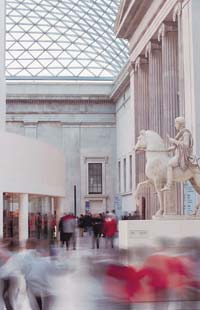

|
La Great Court
est un espace carré, couvert, situé en plein cœur du British Museum.
Avant son ouverture en décembre 2000, cet espace n'était pas accessible
au public depuis 150 ans.
Le British Museum
d'origine comprenait une cour ouverte, en son centre. Toutefois,
la collection de la bibliothèque s'est vite développée et a exigé
un volume de stockage plus important et l'ajout d'une salle de lecture.
Ainsi, entre 1854 et 1857, un bâtiment circulaire a été construit
au cœur de l'espace central, pour répondre à ces besoins, rejoint
bientôt par un labyrinthe de piles de livres, occupant l'espace
encore disponible. Suite à la construction de la nouvelle British
Library et au transfert des collections de livres vers St Pancras,
en 1998, les piles de livres ont été dégagées.
Occupant un
espace aussi grand qu'un terrain de football (90 x 70 mètres), la
Great Court a été retravaillée par les architectes Foster and Partners,
pour en faire un espace public. Le toit moderne en verre et acier,
qui couvre la totalité de la cour, est, avec ses 3 312 panneaux
de verre uniques, le plus grand espace couvert de toute l'Europe.
Ce toit crée une nouvelle attraction architecturale, au cœur de
l'un des plus importants bâtiments historiques de Londres.
La Great Court
est le point central de toute visite du British Museum et reste
ouverte le soir, après la fermeture des galeries. Vous pouvez vous
y détendre, autour d'une tasse de café, acheter un livre ou un souvenir
dans l'une des boutiques du musée, ou bien dîner au restaurant qui
surplombe la Reading Room historique. En soirée, la Great Court
est un lieu de réunion vivant et animé, qui accueille de nombreux
événements.
Des panneaux
d'affichage électronique et les brochures What's On vous informent
sur le programme des différentes galeries du musée et du Clore Education
Centre, auquel vous pouvez accéder par l'entrée sud de la Great
Court.
Autres lectures
: Pour un historique complet de la Great Court, l'ouvrage The
Great Court and the British Museum, de R. G. W. Anderson, est
disponible au Bookshop, au prix de 12,99 £.
|
 |